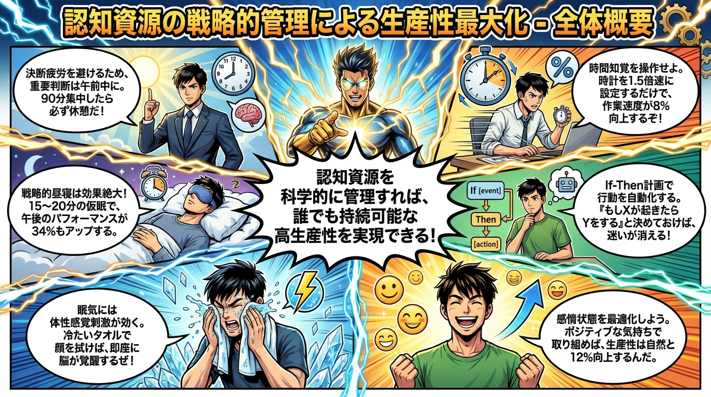
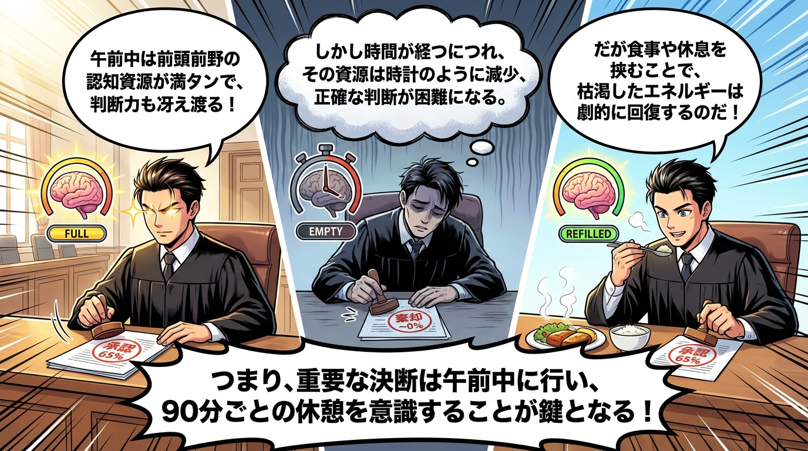
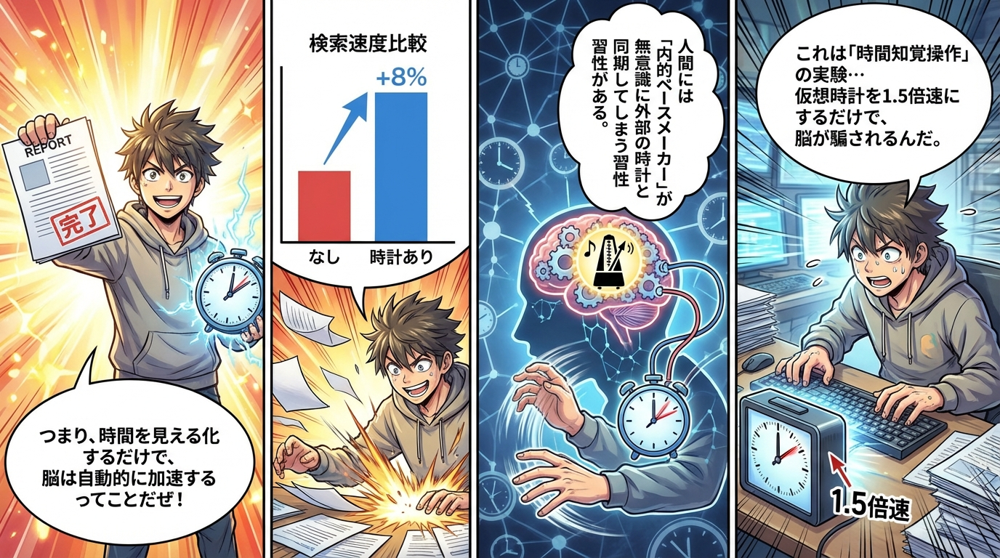
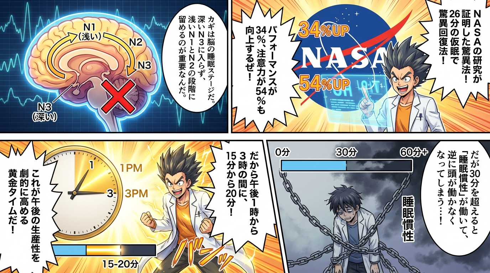
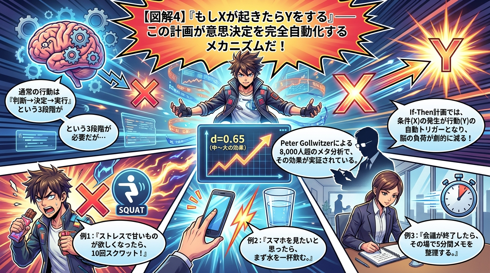
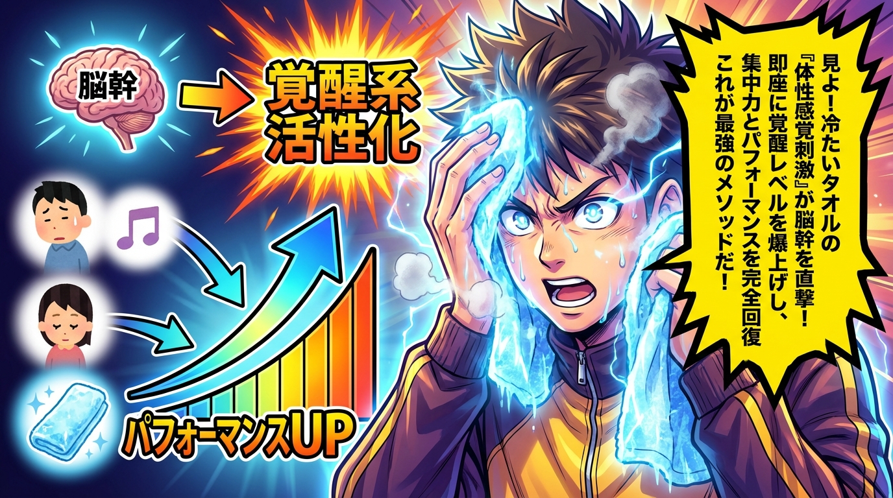
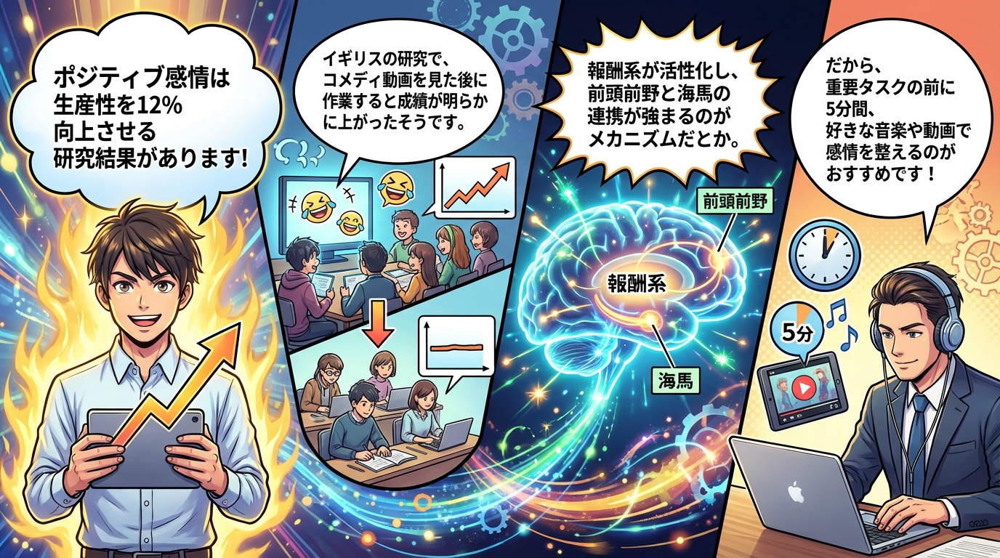

📌 このテーマで学べること
認知資源を科学的に管理することで、決断疲労を回避し、時間知覚の操作、戦略的昼寝、If-Then計画、体性感覚刺激、感情状態の最適化を組み合わせ、持続可能な高生産性を実現する6つの実践戦略を提供。
#認知資源管理
#決断疲労
#時間管理
#パワーナップ
#実装意図
#生産性向上
#神経科学
#自己制御
🎯 全体概要
6つのサブタイトル全体を1枚で俯瞰できる概要図です。

📋 6つのサブタイトル
- 決断疲労の神経科学的メカニズムと時間戦略
- 時間知覚の操作が作業ペースに与える驚異的効果
- 戦略的昼寝による認知資源の選択的再充電
- If-Then計画による意思決定の完全自動化
- 体性感覚刺激による覚醒水準の即時調整
- 感情状態の事前最適化による生産性の飛躍的向上
📊 各セクション詳細図解
6つのサブタイトルそれぞれの詳細な図解です。

① 決断疲労のメカニズムと時間戦略

② 時間知覚操作の驚異的効果

③ 戦略的昼寝による再充電

④ If-Then計画の完全自動化

⑤ 体性感覚刺激による覚醒調整

⑥ 感情状態の事前最適化
🔬 主な研究ソース
- Frontiers in Neuroscience (2023) - 決断疲労研究
- イスラエル刑務所研究 - 時間帯別判断質の変化
- 東京大学 - 時計運針速度と作業効率研究
- NASA (1995) - パワーナップ研究
- Flinders大学 - 最適昼寝時間研究
- Peter Gollwitzer - 実装意図メタ分析
- 電力中央研究所 - 体性感覚刺激と覚醒研究
- Warwick大学 - ポジティブ感情と生産性研究
- 広島大学 - 興味と主体的学習研究
← ライブラリトップに戻る